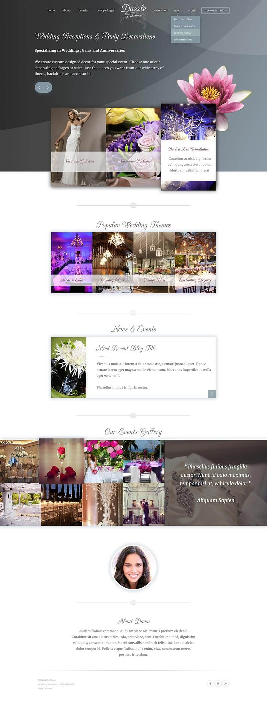

-
Dazzle
Website design
This project is currently in the design stage but I'm pretty happy with what I've created so far. Typically our clients are in the oil and gas related; so its rare I get a chance to work on a project that's softer or more feminine in design.
So far this has been fun to plan and design as I get to spend more time on typography and add subtle layering.
An important part of planning this design is that I've been focused on creating it fast and fully responsive. To limit http requests I'm planning to limit the large images as much as possible. Currently I have the background composed of css gradients and a single tiny svg; instead of a single monstrous image.

Once I've completed the site I will add a link.
-
Moi
Business card design
Most of my day-to-day work is spent in a code editor, interacting with clients or occasionally getting to come up with website designs. Its rare that I'll attempt to create a logo or do any print design.
These are my personal business cards. They are "me" and I am happy with how they turned out.
-
Lander
Super fast, light-weight landing page
My personal opinion is that I'd rather work within Google's guideline than try to trick them. I don't think this site follows those guidelines exactly.
Although I didn't agree with the purpose of this site; I still wanted to make it as best as I could.
The original was peppered with spammy links and
stuffedcrammed with keywords.Instead of leaving it as a doorway page I converted it to a slightly less annoying landing page.
My goal for this site was to make it fast and easy to read.
-
Redacted
Website design & development
I got to design and build this site but it never got the chance to be launched. Instead I scrapped it, changed the links and made the font "redacted".
It was unfortunate that it never got used but at least it was enjoyable to work on.